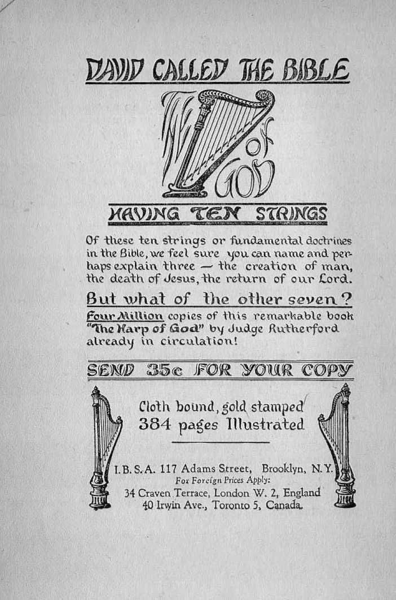
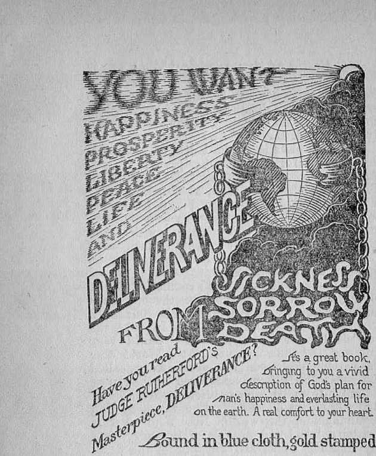
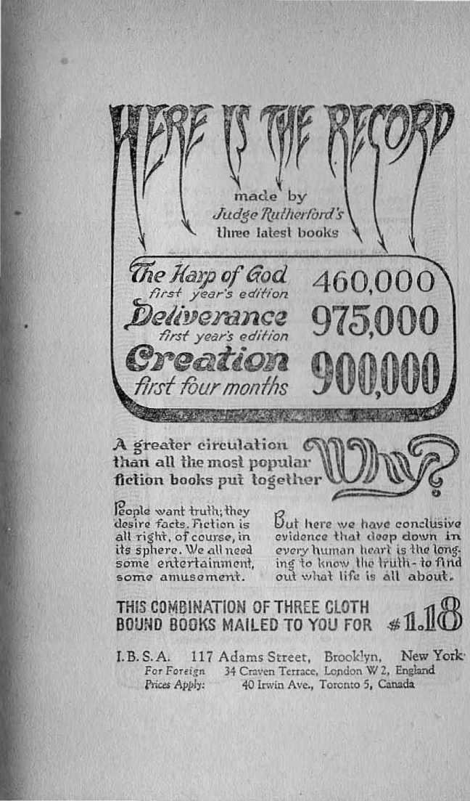
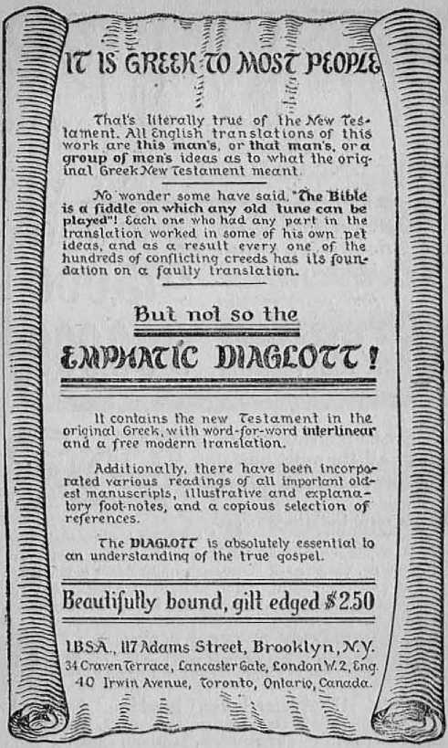

I
By J. F. Rutherford
Author of
Creation Deliverance
Harp of Qod Where are the Dead?
Prosperity Sure Our Lord’s Return Heil etc.
Publishers
International Bible Students Association Watch Tower Bible and Tract Society Brooklyn, New York, U.S.A.
London, Toronto, Melbourne, Cape Town, Berne, Magdeburg, etc.
Printed In C. S. A.
Copyright 1928 by
International Bible Students Association Brooklyn, N. Y.,
THE great ocean liner had sounded the first whistle giving warning that it was about to sail. Standing on the top deck was Philip Sydney, a young man of British birth. For five years he had resided in America. One of the large corporations of America had sent Mr. Sydney on business to his native land. On board the ship to England he had made the acquaintance of Mr. John David, an American gentleman, several years his senior.' They had agreed to return to America together and had booked their passage accordingly. The return journey to America was now about to begin; and Mr. Sydney was waiting for Mr. David, who had not yet appeared at the dock. Young Sydney closely watched every face coming up the gangway, expecting to see Mr. David come aboard. “By Jove,” he remarked, “it looks as though my friend will not make the ship.”
A special boat-train dashed into the station and quickly discharged its passengers, who hurried forward to the ship-. Mr. David was not in the company. A high-powered motor car driven at a rapid speed came along the
wharf. Two gentlemen leaped out and ran to get aboard the ship. Neither one of them was Mr. David. The gangway was taken in, the great ship weighed anchor, the tugs were screaming and puffing, while persons on the dock shouted goodbye to their departing friends. The vessel began to move. Disappointment marked the countenance of young Sydney.
A ship steward rushed along the deck, crying out, “Mr. Sydney.” Being hailed, he said to Mr. Sydney: “A wireless, sir, it seems important/' The radio message read: “Coming by airplane. Hold the ship. David.” At the moment a speck appeared in the sky, which could lie seen from the top deck. It grew in size, and it was soon to be observed that it was a seaplane making straight for* the vessel. The plane circled the great ship and quickly lighted on the waters surface: a ladder was lo-wered, and Mr. David was taken aboard.
“Bravo! old top!” cried Sydney. "Thought wo had lost you, but see you are safe and sound.’’
“I am happy to make the ship,” said Mr. David. “That plane made it possible. I was flying from Amsterdam this morning, and we ran into a heavy fog. Our airplane went above the clouds, hoping to get over: then it developed engine trouble; and we had to come down on the Belgian coast. Fortunately I got a seaplane there, and here I am. Wonderful this means of transportation we have these days.”
"That is right,” said Mr. Sydney. “You. know the British lead the world in doing things. The British have the best ships and best airplanes, the greatest financiers, the greatest statesmen, the most renowned preachers; and, well, I’m glad I am an Englishman, even though I am still domiciled in your American country.”
Mr. David looked at his young friend for a moment and then remarked: “But the British are not to be given credit for these marvelous modern-day means of transit.”
“There you go again,” said Mr. Sydney. “You Americans never want to give due credit to the Englishmen for modern conveniences.”
“Nor do I give credit to the Americans or any other people on earth for these wonderful means of travel,” Mr. David added. “We should give credit to him to whom credit is due. The great Creator of th6 universe has provided these marvelous inventions for this very time.”
“Do not get too serious yet, Mr. David,” remarked young Sydney. “Come away now and let us have a cup of tea, and then you can tell me about your journey to the Continent.”
The majestic ship poked her nose westward through -the waves and sped on to America. Seated in a cozy corner of the dining saloon, the American and Englishman enjoyed together a cup of tea and other things peculiar to the land of Britain. Their conversation turned again to where it had been broken off on Mr. David’s arrival.
Sydney: And how did you find things on the Continent, old top? Jolly fine. I dare say.
David: On the surface, better than immediately following the war; yet the sober-minded people are perplexed and many of them in distress. On former visits to the Continent I have observed that the people reposed much confidence in their advisers, particularly the clergymen. They looked upon those gentlemen of the cloth as guardians and safe counsellors. A great change has taken place during the past decade. The people are fast losing confidence in the clergymen, and they seem to be at sea and in great doubt as to present conditions.
Sydney: Ah, they should have some British clergymen over there. You know Britain produces the greatest clergymen in the world. Occasionally one of the stronger men among them comes over' to America. Then you hear some real oratory and expressions of real wisdom. Take Dr. Parkes Cadman, for instance. He was a Britisher, born at Wellington, England. That man is a marvel, lie speaks almost every Sunday afternoon before the Bedford Branch of the Young Men’s Cheerio Association of Brooklyn. At the same time the big milliondollar radio station broadcasts his words of wisdom throughout the land. He is a-high topper, I tell you: and he is hacked by our big business men, including my company, too. He is the president of the Federal Council of Churches of Christ in America. That is a large title, but he deserves it. He really blazes the way, and other preachers follow. After
each, sermon on Sunday he answers questions; and those answers are given right off the bat, bang slam. He makes these calamity howlers look sick. He is right up to date. Some time before we sailed I heard him one Sunday afternoon answering questions. Next day the New York papers carried a report of what he said. One question and answer struck me so forcibly that I cut it out. By the way, here it is. Let me read it to you:
Question: Do you believe we are living in the last days, and have we sufficient signs telling us that the Lord’s coming is near, even at the doors?
Answer: No, the signs are all the other way. We do not want the Lord here yet. What we want is a world fit for Him to come to. Instead of gazing into the sky, asking when He shall come, we ought to get busy and clean up the earth in preparation for His arrival. . . . Moreover, this earth is quite a juvenile planet- Let us robe it with God’s glory in man’s moral achievements, then Christ can come.
Don't you think that was a clever answer?
David: No. I thing the answer is a lot of bunk.
Sydney: Bunk! Bunk! man! Why, what do you mean? You are not a preacher yourself, are you?
David: No, not the kind you are thinking about. I am just a plain man. But I know that his answer is a lot of wind. The question is a serious one. It is right up to date. The correct answer should make every man who is able to see it sit up and take notice. Dr. Cadman
claims to be a preacher and to preach concerning the Bible, does he not?
Sydney: Why of course. He knows the Bible from lid to lid.
David: Sure; well then, if he does he should tell the people the truth.
Sydney: Why, doesn’t he tell the people the truth?
David: Well, not if that answer is a sample. I know what the Bible says about these matters, and the Bible is the truth.
Sydney: My, I am interested! If you know any better answer than Dr. Cadman gave, I would Like to have it.
David: Why, man, you have seen enough this very day to enable you to give a better answer than Dr. Cadman if you would take notice of what you saw in the light of the Scriptures! '
Sydney: Tell me what you moan. Let me hear your answer to that question.
David: Do you really want me to tell you what the Bible says and how well the facts, which both of us know, corroborate the Bible proof?
Sydney: I certainly do. My father was a preacher, and lie wanted me to be one but I did not take to it very kindly. I. do know something about the Bible text, however; and I will be greatly interested in what yon will have to say. I will order some more refreshments, and then we can enjoy ourselves while I listen to you.
Da-vid: In the outset please understand that I have no controversy with Dr. Cadman as a mere man of the world. The question was propounded to him publicly; and his answer given publicly and then broadcast throughout the land. That lays the whole matter open for public consideration.
Millions of people are interested in that question. In fact the question has churned the attention of thoughtful men and women for many centuries. It is a Bible question and its answer involves most of the prophetic statements of the Bible. The answer, therefore, in order to be correct must be supported by the Bible and the physical facts in harmony with the Bible. If the answer is confined wholly to man’s wisdom, then it is of no value because it is merely an expression of opinion. The Bible declares that man’s wisdom in the sight of God is foolishness. — 1 Corinthians 1:20.
Dr. Cadman’s answer is only the expression of man’s wisdom. His wisdom finds no support whatsoever in the Bible. That is the reason why I take issue with him. The people are entitled to the answer that is supported by the Bible. Since you ask me to tell you what I think about it, I am going to give you the answer which is supported by the Bible. You, being acquainted with the text of the Scriptures and being familiar with the history of the world, will be able to readily determine whether or not my answer is reasonable and correct.
10
LAST DAYS
To determine whether or not we are living in the last days we must ascertain first what is the meaning of the term '‘last days”. The words “last days” appear a number of times in the Bible. The term has reference to the latter part of the Gentile Tinies, and to the end of the world of which Satan is god, and to the second coming of Christ. The word day or days as used in the Scriptures does not mean a twenty-four-hour day or several such days. It means a fixed period of time. The Scriptures speak of the “days of Noah”, and Jesus used the term in connection with his second coming. (Matthew 24:37) Noah was many years in building the ark and in telling the people of the end of that world. Bible prophecy focuses on the last days, at which time fulfilment is to be expected.
Prophecy means the foretelling of events that will come to pass in the future. Prophecy comes only from God, and it was written by holy men of old who were moved upon by God's spirit to write. (2 Peter 1:21) The prophets of God foretold the last days, and all devout Jews were looking for that time when Jesus came to earth. The disciples of Jesus had been taught concerning the end of the world and “the last days” and the setting up of the Messianic kingdom. They were keenly interested therein. For this reason they approached Jesus privately and propounded to him this question: “Tell us, when shall these things be? and what shall be the sign of thy coining, and of the end of the world?”—Matthew 24: 3.
In answer to that question Jesus said nothing about gazing into the sky and asking when he shall come, as Dr. Cadman put it. The distinguished gentleman does not find any authority in the Scriptures for any one to gaze into the sky and ask when the Lord is coming. Nor should we expect Jesus would so advise. The question was propounded by men; and naturally we should expect Jesus to tell those men of something that men would be able to understand as signs or proofs of the end of the world and of his second coming. He did tell them of the things that men would observe in the last days and such things as men are capable of understanding. When we examine his answer in the light of the physical facts showing fulfilment of prophecy, any one can understand that answer.
WORLD
First may we get some side-lights on the end of the world, because that period of time synchronizes with “the last days”. Satan has been the god (or invisible ruler) of this world since its foundation. The one exception was the nation of Israel. With the people of that nation God made a covenant, and they were his chosen people until they repeatedly violated that covenant. Then God permitted the Israelites to be taken captive, and the Gentiles or non-Jews were permitted a period of time to rule the world without interference. There Satan became the god of the whole world. When Jesus was here he recognized Satan as the ruler of this world.
13
It is written that the Devil made claim before Jesus that all the kingdoms of the world belonged to him and offered to give them to Jesus upon certain conditions. (Matthew 4: 8, 9) Jesus did not deny Satan’s rulership at that time. Later he said to his disciples: ‘The prince of this world shah be cast out.’ (John 12:31) As further evidence that Jesus considered that Satan is the god of this world, when he stood before Pilate he said: “My kingdom is not of this world: if my kingdom were of this world, then would my seiwants fight, that I should not be delivered to the Jews: but now is my kingdom not from hence” (John 18: 36), not from this day, but my kingdom is future. “The last days” of Satan’s rulership must come first.
By this we must understand that while Jesus was appointed to be. King, the time was not then due for him to take possession, but he must wait a long time until the setting up of his kingdom. Satan has always been the enemy of God and Christ. ‘When Jesus was resurrected and ascended on high God said to him: “Sit thou at my right hand, until 1 make thine enemies thy footstool.” (Psalm 110:1) In other .words: 'Do not interfere with Satan’s rulership until the time comes to put him down.’ It would mean, then, that when the time arrives proceedings must be taken to oust Satan. It also follows that ouster proceedings against the Devil would not begin until the second coming of the Lord.
is
The Apostle Paul, in plain phrase, in 2 Corinthians 4:3, 4, declares that Satan is the god of this world. Satan is a spirit being; therefore he is invisible, but exercises his evil power over the nations and peoples of earth, and for that reason is called god or ruler. World means the peoples of earth organized into forms of government under the supervision of an invisible ruler, who for a long time has been Satan. “The last days”, therefore, would have reference to that period of time in which the Lord Jesus begins operations against Satan to oust him and to establish his own kingdom.
HOW HE COMES
Jesus did not say that lie would come and exhibit his body to the peoples of earth. He is a spirit, and no human eye can see a spirit. In due time, however, he will exhibit his power that all human eyes may see or discern his presence. He used the rising of the sun as an illustration of the manner of his coining. He said: “As it cometh out of the east and shineth even unto the west; so shall also the coming of the Son of man be.” (Matthew 24:27) The power of Jesus is without limitation, and he can exercise that power from his heavenly throne just as well as if he is at the earth.
From the time Jesus ascended into heaven and for many centuries, great darkness has covered the earth. In recent years there have come to light great inventions and the rights of man have been contended for more earnestly than ever before. This is due to greater light
14
shining from the Lord. God said to his prophet Daniel: “But thou, 0 Daniel, shut up the words, and seal the book, even to the time of the end; many shall run to and fro, and knowledge shall he increased. . . . And he said, Go thy way, Daniel: for the words are closed up and sealed till the time of the end. Many shall be purified, and made white, and tried; but the wicked shall do wickedly: and none of the wicked shall understand; but the wise shall understand.”—Daniel 12:4-12.
You are a descendant of a distinguished stock, Mr. Sydney. Your forefathers were men of profound learning. But did your grandfather know anything about a mighty ocean liner like the one we are now riding on? Did he ever have the privilege of traveling on a railway train moving at the speed of ninety miles per hour? Did he ever have the pleasure of running about the country in his private automobile? Did he ever dream of a flying machine? What would he have thought had he been standing on the deck this morning where you were and had seen the airplane come down and discharge its passengers? Do you know of any man in England today that is more learned than your great-grandfather was? Why, then, did not these wonderful inventions come into existence in his day? Why have all of these methods of rapid transit we now sec come to light during the past half century? Can you think of any good reason for it? Surely it is not due to the greater wisdom of men of our time. What then is the proper answer?
God’s prophet, whose words I have just quoted to you, gives the answer, namely: 'It is in the time of the end? The prophet said that as a proof that we have reached the time of the end or last days many would be running to and fro and knowledge would be greatly increased. Mark you, he did not say that wisdom would be increased but that men would have a knowledge of what God had long ago provided.
When I was in the air this morning in that plane I sent you a wireless message, and you think man is responsible for that great power. The truth is, God foretold through his prophet three thousand years ago the use of the wireless. It is written: “Canst thou send lightnings, that they may go, and say unto thee, Here we are?” (Job 38:35) Is not that practically what I did to you this morning long before I could see you? And did not what we call the power of the lightning carry that message to you?
God through his prophet also foretold centuries ago the airship in these words: “Who are these that fly as a cloud, and as the doves to their windows?”—Isaiah 60:8.
The Prophet Daniel, whose words I have quoted to you, stated that this means of rapid travel and long distance communication and great increase of knowledge constitute proof that we are in the time of the end or the last days. Does one have to listlessly gaze into the sky in order to discern these things? Certainly not. God gave man brains with which to think
IS
the Lord is manifesting his power. Before examining the answer given by Jesus, reference is made to some prophecy which will enable us to apply the facts showing fulfilment of the prophecy.
The last king of Israel was dethroned in 606 *B. C. God had foretold that the Gentile Times should be a period, of seven symbolic times, or 2520 years. That period of time necessarily must end in 1914. because 606 (B. C.) plus 1914 (A. D.) make 2520 years. If this calculation is correct some proof should appear in 1914 showing the end of the world and the coming of the Lord.
Now mark the answer of Jesus to the question propounded to him. He said: “Nation shall rise against nation, and kingdom against kingdom: and there shall be famines, and pestilences, and earthquakes, in divers places. All these are the beginning of sorrows.”— Matthew 24: 7, 8.
Exactly on time in 1914 the World War began. There never was a world war before, in which nation rose against nation and in which all elements of the nations involved were required to do their bit. Then followed the great famines in various parts of the earth and pestilences, such as the Spanish flu, which killed more people than the World War. There have been more earthquakes since 1914 than ever before. Jesus said these things shall mark the beginning of the sorrows upon the Devil’s world. Every man on earth that is able to reason has seen these proofs or signs. If this
19
is the beginning, it means there must be something more to follow which will bring even greater sorrow.
Jesus further said that in “the last days” his true followers would be persecuted, afflicted and killed and hated of all nations for his name’s sake. During the World War all true Christians, whether on the German side or among the English and their allies, were hated. Every man who had conscientious scruples, based upon the Scriptures, against killing his fellow man was not only hated but persecuted, beaten, thrown into prison; and a number of them were killed.
As a further sign or evidence Jesus said the Jews would be trodden down until the Gentile Times should end and then God’s favor would begin to bring them back into their homeland. Every one knows that it was in 1918 that the movement to reestablish the Jews in Palestine took on a great impetus. The Jews are rebuilding Palestine. This is a strong sign or proof.
As another sign or proof Jesus said: “Upon earth [will be] distress of nations, with perplexity; the sea and the waves roaring; men’s hearts failing them for fear, and for looking after those things which are coming on the earth.” (Luke 21:25, 26) Surely this sign is today seen by every one. All the nations are in fear and trepidation. The conference of the League of Nations now in session at Geneva, Switzerland, is manifesting fear and perplexity ; and the peoples of earth are disturbed and in distress.
Features of£ STI MS FEATURES OF I BIBLE isms
" yanrfeiAATTSR of
5^&l I7X£ r^i‘hearJs'art/^ ^en O Jesus was leading a/j/" f a5^? r/Z/T hishhle ((if'oand of disciples up th? ■ !j/7 t'0~i'r’- | Falesh’nc he ccnsianj-
■ referred 3.o 33sc esJablishmert of
'■fl'J ili^/l God's kingdom on 5he earth - irhcn
11'(!*'■' frn. the deserts and IhenmoJe land nrnrtd byf.fiS r(i-' become 3ike like Garden of Eden and people arortd I]ive for ever on earth ^0^ • /. tM'i On one occasion he fold, sozne infer-
< Z/jW esled, inquirers fhai the heSinnint °gorio-us ccndiiion of eyeriasifn£ life, liberty and)happiness nwas asso-
l 1^//^ ^rt3h iheXre-esfeblishjnenl of the Jesvs in /pj)Palestine«
ITo'iir ^ajcllfte^an in 1318
w(j)i)
You. certainly kaveyfiya. rare treat awaiting you in reading Judge ^T^iitherfords book
■128 Fates. ?osi-paid 15 c
LB.S.A. 117 Adams Street, Brooklyn, New York J-or Foreign 34 Craven Terrace, London W 2, England prices Apply: 40 Irwin Ave., Toronto 5, Canada
The World War suddenly stopped in 1918. And for what reason? The reason is given by the Lord Jesus, that thereafter the gospel of the kingdom must be preached to the nations as a witness. (Matthew 24:14) Gospel means good news. The good news then, as proven by the physical facts showing that we are in the last days, must from that time forward be proclaimed to the nations as a witness. Is there anybody doing this? The answer is, Yes. The Bible Students are proclaiming this message throughout, the world in the various languages of the nations and peoples. They are claiming no credit for it, but are rejoicing in the privilege. The people are not hearing anything from the preachers about the second coming of the Lord. On the other hand the clergy are opposing it. Jesus declared' that this witness must be given, not for the purpose of converting the world, but to serve notice on the world before the great time of trouble which shall follow. All the nations are fearful of greater trouble - and for that reason they are preparing for war.
The fulfilment of the prophetic utterances of Jesus particularly since 1914 furnishes conclusive proof that we are in “the last days”. Why do men who claim to be preachers of the gospel of Christ, and who claim to be in the church of Christ, fail to tell the people about these signs or evidences?
22
SCOEKEBS
Now I call your attention to some testimony that answers my question last propounded. The Apostle Peter under inspiration was writing of “the last days” and the second coming’ of the Lord. He said: “Knowing this first, that there shall come in the last days scoffers, walking after their own desires, and saying, Where is the proof of his coming?”—2 Peter 3:3-5.
When Dr. Cadman says there are no signs of his coming but all proof is the other way, is he not fulfilling this very prophecy of the Apostle Peter? Peter then adds: “For this they are willingly ignorant of.” Of course the distinguished gentleman is not an ignorant in;H1 as .the world speaks of ignorance. On the contrary he is a very highly educated man. It must be admitted, however, that he does not know of this scripture; or else he is deliberately ignorant of it and is willingly keeping it from the people. But, you say, why would this appear in the Scriptures? I answer that the apostle wrote under inspiration and wrote prophetically.
God foresaw that in this time of the last days there would be men walking, after their own desires and denying the presence of the Lord. Does Dr. Cadman desire the Lord’s second coming? He answers: “We do not want the Lord here yet.” His desire is thus expressed. Surely any one that truly loves the Lord would be anxious to see him at any time.
23
PERILOUS TIMES
The Apostle Paul also wrote under inspiration and spoke of “the last days” and these are his words: “This know also, that in the last days perilous times shall come. For men. shall be lovers of their own selves, covetous, boasters, proud, blasphemers, disobedient to parents, unthankful, unholy.” (2 Timothy 3: 1, 2) Can any one deny that we are now in perilous times within the meaning of this scripture? You have but to look at the newspapers to see that their columns are full of reports of all kinds of crime, and that no one is entirely safe. The papers daily carry reports of boasting preachers declaring themselves against the truths of the Bible. Never has there been such an expression of selfishness amongst men. They are lovers of their own selves, covetous, and boasters, and proud. The apostle continues: “Traitors, heady, highminded, lovers of pleasures more than lovers of God; having a form of godliness, hut denying the power thereof: from such turn away.”
Mark the words “having a form of godliness, but denying the power thereof”. I submit that the church systems today go through a form of godliness and openly deny God’s power. They deny that God created man as perfect; deny man’s fall, deny the blood of Jesus as the redemptive price for man’s recovery, and deny God’s kingdom. This is a strong proof that we are in “the last days”.
Jesus died and ascended on high to present the value of his sacrifice as a sin-offering for man, as it is stated in Hebrews 9:24. Until his second coming he is taking out from the world the members of his body, constituting The Christ complete. His second coming is for the purpose of judging and blessing the world. Concerning this the apostle says: “Because he hath appointed a day, in the which he will judge the world in righteousness, by that man whom he hath ordained; whereof he hath given assurance unto all men, in that he hath raised him from the dead.” (Acts 17:31) Again the apostle states: “The Lord Jesus Christ . . . shall judge the quick and the dead at his appearing and his kingdom.”—2 Timothy 4:1.
Is it possible for the Federation of Churches to make this earth a fit place for Christ to come? If so, then why should he come at all? Why would not he let them do the whole job and Christ busy himself with other matters? But will the earth be clothed with the glory of God made manifest in man’s moral achievements when Christ does come? No; on the contrary great darkness, ignorance and crime of all kinds exist. The Lord God, speaking to the consecrated ones who are his witnesses, says: “'Arise, shine; for thy light is come, and the glory of the Lord is risen upon thee. For, behold, the darkness shall cover the earth, and gross darkness the people: but the Lord shall arise upon thee, and his glory shall be seen upon thee.” (Isaiah 60:1, 2) This means that only those who love and serve God will be in the light.
The physical facts, in the light of the Scripture^ show that we are now “in the last days’’. Among the strongest proofs is the fact that the clergy, who claim to represent God, scoff and mock concerning the Lord’s second coming and assume that they are the ones to prepare the earth for his coming.
Sydney: The physical facts stated by you, Mr. David, I know to be true. The texts of the Bible you have quoted I also know to be true. That makes the whole matter very interesting. You know that Dr. Cadman says that this earth is a juvenile planet, and that man has much to do in preparing it for Christ. What do you think of that?
David: The Bible account shows that God occupied about forty-two thousand years in preparing the earth before he created man and put him on it, and that man has been on the earth for more than six thousand years. That does not look as if it is juvenile, does it? If you want to have a full statement of the Bible on this point, I refer you to a book called Creation, published by the International Bible Students Association.
Sydney: But surely it is true that man has been making the earth better. You know, that Dr. Cadman and other learned men of the clergy teach that man has been bringing himself up for centuries, and that he will make the earth a lit place for Christ to come to.
David: The Scriptures make that matter clear also, and show that these self-constituted wise men are wrong. The Bible says that in the beginning God created the heaven and the
ME ME ME you you you EVER EVER EVER JHOUfiW READ /POKED
A Book you wilf not (ay downunf-if you have read f’Qrougfy to tfje (asKword.
Heavers - WSjaf and where is if?
Angels- A myU? “r not?
Earth - Aow old, fjow formed ?
Human Beings - from monkeys or wSjaf?
(Joab’s flood - Traditional or real? Coa! and Oi( - Vegetable Origin?
A ffecusand questions answered reasonably, Scientifically, (ogicatfy, scripfuralty.
24 four-color plates.
Remember?
We say you will read to tf?e last word,
‘By J.E Ttutherford.
CfcAbound, 3S4 pages, Post-paid 45c.
I.B.S.A. 117 Adams Street, Brooklyn, New York For Foreign 34 Craven Terrace, London W 2, England Prices Apply: 40 Invin Ave., Toronto 5j Canada
earth (Genesis 1:1); also, that man was commanded to multiply and fill the earth; also, that the first man was created a perfect man. The Scriptures show how the earth became defiled and how it will be cleaned up. As to ■whether or not the earth can be made better by man’s efforts, you must view that matter in the light of the Scriptures and the physical facts. It will enable us to understand the matter by giving the proper definition to the words.
HEAVEN AND EARTH
There are two separate and distinct meanings to the word earth as used in the Scriptures: One, which is the literal meaning, is the mundane sphere on which the human race resides; and the other, the symbolic meaning, which is the visible part of the organization, of which man is a part and to which mankind is subjected.
There are two meanings to the word heaven: First, the abiding-place of Jehovah and that of his pure and holy angels, which is the literal meaning thereof; and second, the invisible organization to which man is subjected, whether that be evil or good.
The world is composed of both heaven and earth. The invisible part of the organization to which man is subjected is called heaven, while the visible part is called earth; and the two taken together symbolically are called world. For this reason the world is properly defined as, Mankind organized into forms of government under the supervision of an in-
visible overlord and his servants or his allies.
The Scriptures speak of God riding upon the heavens of the heavens. This is a poetical expression of the loftiness of Jehovah above all creation. He is the Most High, and besides him there is none like unto him.
God created the literal earth and placed a perfect man upon it. Only Eden was then glorious. All other parts of the earth were unfinished. Our English word cursed is used to apply to the earth outside of Eden, which really means an incomplete or unfinished condition. The perfect man Adam and his perfect wife Eve constituted the beginning of the symbolic earth. They were under the supervision of the overlord Lucifer. Lucifer, by reason of his ambition, caused sin to enter into the world. His name was then changed to that of Satan the Devil. Because of his sin Adam was driven out of Eden into the unfinished earth. Associated with Lucifer were pure and holy angels whom he defiled and they became a part of his wicked organization. It is written: "And it came to pass, when men began to multiply on the face of the earth, and daughters were born unto them, that the sons of God saw the daughters of men that they were fair; and they took them wives of all which they chose.”—■ Genesis 6:1, 2.
The offspring of the materialized angels who cohabited with human women were desperately wicked; and therefore it is written: "The earth also was corrupt before God, and the earth was filled with violence. And God
32
looked upon the earth, and, behold, it was corrupt; for all flesh had corrupted his way upon the earth. And God said unto Noah, The end of all flesh is come before me; for the earth is filled with, violence through them; and, behold, I will destroy them with the earth.”—Genesis 6:11-13.
Here the word earth is used symbolically, and means that the visible organization of men was corrupt; and God declared his purpose to destroy it. The great flood was sent to accomplish that purpose. God saved righteous Noah and the members of his family, carrying them over the flood. The inhabitants of the earth, therefore, were destroyed. After the flood God said to Noah and his sons: “Be fruitful, and multiply, and replenish the earth.” (Genesis 9:1) All people that are now on the literal earth are the descendants of Noah; and since Noah was a descendant of Adam, all men are descendants of Adam.
Jehovah God, the great Creator, made the earth and placed man upon it and made it for man’s habitation. ‘T have made the earth, and created man upon it: I, even my hands, have stretched out the heavens, and all their host have I commanded. . . . For thus saith the Lord that created the heavens; God himself that formed the earth and made it; he hath established it, he created it not in vain, he formed it to be inhabited; I am the Lord, and there is none else.”—Isaiah 45:12, 18.
The earth never did belong to man. “The earth is the Lord’s, and the fulness thereof.”
(Psalm 24:1) It is the good pleasure of the Lord to give the earth to those of the human race who love and obey him. It is therefore written: “The meek shall inherit the earth." Meek means those that are teachable, who seek to know the Lord’s way and who are anxious to do it.
Following the gr^at flood, God permitted man to go on in his own way and try his hand at establishing a desirable government upon the earth. He did not restrain Satan the Devil, but permitted him to influence all those of mankind who wanted to be influenced. God gave mankind the privilege of choosing good or choosing evil, and most of them yielded to the ‘ evil influence of Satan. God has always had some persons on earth who love and obey him, but the majority of men do not love or obey God. The period of man’s history has been a time of great testing upon men. Those who love God have been his witnesses on the earth and witnesses to those composing the symbolic earth. Satan the invisible ruler, and therefore the god of the evil world, has blinded the minds of men and thereby prevented them from seeing God’s great plan for the blessing of the human race.
conversion
Time and again the Scriptures declare God’s purpose to redeem mankind from sin and death and then to give every man a free, full and unobstructed opportunity to serve God and be restored to perfection. If that is done, then
34 God’s Work for Real Christians the people living on the literal earth, and forming the symbolic earth, will be to the glory of God. If God should bring the literal earth to the beauty of Eden, then the whole literal earth will be to the praise and glory of the great Creator.
The Scriptures reveal God's plan to be this: Bedemption of mankind by the sacrifice of his beloved Son ■ gathering out from amongst men a people for his name, who are to be associated with Christ Jesus in his kingdom; and then the restoration of the obedient ones of humankind to perfection.
It was in the year 33 A. D. that Jesus was put to death. Three days thereafter God raised him up out of death. Forty days later Jesus Christ ascended up into heaven and into the presence of Jehovah God. Ten days thereafter, known as Pentecost, God began the selection of the members of Christ, which is the church his body. (Colossians 1:18) From then until the present time God has been causing the message of his Word of Truth to be preached upon earth, and by this means he is gathering together the true church. God never gave the members of the church or Christians the authority while on earth to clean up the world. The commission of authority which he gave Christ Jesus and the members of the church his body is stated in these words: “The spirit of the Lord God is upon me; because the Lord hath anointed me to preach good tidings unto the meek: he hath sent me to bind up the broken-hearted, to proclaim liberty to the cap-
fives, and the opening of the prison to them that are bound; to proclaim the acceptable year of the Lord, and the day of vengeance of our God; to comfort all that mourn; to appoint unto them that mourn in Zion, to give unto them beauty for ashes, the oil of joy for mourning, the garment of praise for the spirit of heaviness; that they might be called trees of righteousness, the planting of the Lord, that he might be glorified.”—Isaiah 61:1-3.
Briefly summed up, this commission authorizes the Christian to tell the teachable ones the message of truth, and to comfort them and give them hope by reason of the truth, and to help each other as brethren in Christ to a better understanding of the divine plan.
CLEANING UP
Sydney: But, Mr. David, I call your attention again to Dr. Cadman’s statement: ‘‘Instead of gazing into the sky asking when he shall come we should get busy and clean up the earth in preparation for his arrival. Let us robe the earth with God's glory in man’s moral achievements; then Christ can come.” Don’t you think it is right that Christians have something to do with that work preparatory to the Lord’s coming?
David: Cleaning up is a proper thing if we know who is to be cleaned up and who is going to do the cleaning. I note that Dr. Cadman stated: “Instead of gazing into the sky and asking when he [Christ] shall come we ought to get busy and clean up the earth in preparation for Iris arrival.” That statement finds no
authority in the Scriptures. But you may ask, Is it not a proper thing to clean up? To be sure it is, but to clean up whom? God commands those who start in the way of following Christ to clean themselves up and to keep themselves clean; but nowhere in the Bible is the Christian commanded or authorized to even attempt to clean up mankind in general. The great difficulty is that the so-called Christians, who have formed what is named Christendom, have become so defiled themselves with the uncleanness of the symbolic earth that they have lost sight of God’s purposes concerning mankind. To those who have declared their purpose of following in the footsteps of Christ Jesus the command is given: "Having therefore these promises, dearly beloved, let us cleanse ourselves from all filthiness of the flesh and spirit, perfecting holiness in the fear of God.”—2 Corinthians 7:1.
Does' the cleansing here mean to clean up and put away only the vile and filthy things that afflict humankind? It means much more than that. Every honest person should put away the things that are impure and wicked. The Christian must go much further. The Christian has agreed to do God’s will, which means he must keep himself separate and apart from the world. Satan is the invisible ruler of this world; and the visible part of his organization or ruling factors in the earth is made up of profiteers and professional politicians and their allies who scheme to rob the people and keep them in subjection and con-
troL Can a true Christian have any part in these schemes of oppression or support those who do? The Scriptures make definite answer upon this point, wherein it is written: “What fellowship hath righteousness with unrighteousness? and what communion hath light with darkness? And what concord hath Christ with Belial? or what part hath he that believeth with an infidel? And what agreement hath the temple of God with idols? for ye are the temple of the living God; as God hath said, I will dwell in them, and walk in them; and I will be their God, and they shall be my people. Wherefore come out from among them, and be ye separate, saith the Lord, and touch not the unclean thing; and I will receive you.”—2 Corinthians 6:14-17.
Here is the clear and unequivocal command for the one who is a true Christian to have no part in the schemes of men which have to do with unrighteousness. Since this world is under the supervision and control of Satan the Devil, then a true Christian must be separate and distinct therefrom. This is the reason why Jesus said: “My kingdom is not of this world,” but it is future.
The Federal Council of Churches is a part of the present world organization and makes no effort to deny the fact. That organization is using the name of Christ, and applying it to a worldly organization of which Satan is the god or invisible ruler and calling it Christendom. The Scriptures command that the Christians must keep themselves unspotted from the
world. (James 1:27) The clergy and the principal ones of their flocks have gone further than merely getting worldly spots upon themselves. They are now a part of the world, insisting that a worldly organization is the political expression of God’s kingdom on earth. This illicit relationship between the Devil’s organization and men who name the name of Christ is denounced in the Scriptures as adultery. Therefore it is written: “Ye adulterers and adulteresses, know ye not that the friendship of the world is enmity with God? whosoever therefore will he a friend of the world, is the enemy of God.”—James 4:4.
All who would have the approval of the Lord must cleanse themselves and be prepared for his use when his kingdom is in full operation. A Christian finds it a great fight to keep himself in the proper way. The great majority of those who have professed to be Christians have fallen under the evil influence of the wily adversary. God foreknew that organizations calling themselves Christian would become corrupt and so vile that they would never clean up. They started out with a pure intention and purpose, but fell to the blandishments of the evil one. Through his prophet Jeremiah, God said of and concerning them: “Thou saidst, I will not transgress; when upon every high hill and under every green tree thou wanderest, playing the harlot. Yet I had planted thee a noble vine, wholly a right seed; how then art thou turned into the degenerate plant of a strange vine unto me? For though
thou wash thee with nitre, and take thee much soap, yet thine iniquity is marked before me, saith the Lord God.” (Jeremiah 2:20-22) Those words were written concerning "organized Christianity so-called.
That describes the present condition of ecclesiasticism, showing that by forming a part of the Devil’s organization they have become so corrupt that they are blinded to their own condition and could never even clean themselves up, much less somebody else.
Now compare these scriptures with the language of the distinguished president of the Federal Council of Churches, who said: “Let us robe the earth with God’s glory in man’s moral achievements; then Christ can come.” Otherwise stated, the Lord Jesus Christ could not come until the Federal Council of Churches would so clothe the earth in the moral achievements of man as to receive God’s approval. Surely God would not commit to a company so thoroughly polluted with the Devil’s organization the work of clothing anything with glory to him, much less making the earth fit for Christ to come to. If the statement of the distinguished gentleman were not so serious, it would be ludicrous beyond description of words. Many a good, honest person will be deceived thereby.
god’s woek
Christ Jesus is the great Executor of Jehovah God. God through Christ will clean up the earth and make it a fit place for man. That he will do after his coming. No fallen
yourselves, and ye shall be broken in pieces. Take counsel together, and it shall come to nought; speak the word, and it shall not stand.” —Isaiah 8:9, 10.
The very powers which now control the nations and peoples of earth, and which call themselves Christendom or organized Chris. tianity, have denied the earth. You must keep in mind that the world is presided over by ' Satan the Devil; that he is the invisible ruler; that the world is composed of heaven, the invisible part, and the earth, which is the visible part of the organization. Instead of the symbolic earth being cleaned up when the Lord comes, it will be in the very opposite condition. This is what the Lord says about it: "Lift up your eyes to the [evil] heavens, and look upon the [evil] earth beneath; for the heavens shall vanish away like smoke, and the earth shall wax old like a garment, and they that dwell therein shall die in like manner: but my salvation shall be for ever, and my righteousness shall not be abolished.’*—Isaiah 51: 6.
Smoke means merely remembrance of that which is destroyed; and when the evil heavens vanish away as smoke, that means they are done for. When a garment becomes old and is of no use, it is thrown aside. Symbolically that represents that the organized powers of earth have waxed old and are about to be cast away. Without doubt the oppressive systems of government that rule the peoples of earth shall pass away for ever, to be followed by the establishment of a righteous government by
43
and through the Lord. It is those who have in the name of the Lord claimed to he ruling the people by divine right and authority that have defiled the earth.
God through his prophet long ago foretold this condition that we now see existing, and stated his purpose concerning it in these words: “Behold, the Lord maketh the earth empty; and maketh it waste, and turneth it upside down, and scattereth abroad the inhabitants thereof. And it shall be, as with the people, so with the priest; as with the servant, so with his master; as with the maid, so with her mistress; as with the buyer, so with the seller; as with the lender, so with the borrower; as with the taker of usury, so with the giver of usury to him. The land shall be utterly emptied, and utterly spoiled: for the Lord hath spoken this word. The earth mourneth, and fadeth away; the world languisheth, and fadeth away; the haughty people of the earth do languish. The earth also is defiled under the inhabitants thereof, because they have transgressed the laws, changed the ordinance, broken the everlasting covenant. . . . And it shall come to pass in that day, that the Lord shall punish the host of the high ones that are on high, and the kings of the earth upon the earth.”—Isaiah 24:1-5, 21.
You will find that everywhere in the Scriptures when the term “in that day” is used it has reference to the time of the coming of the Lord and the setting up of his kingdom. When the Lord Jesus ascended into heaven, follow-
44
ing his resurrection, Satan the enemy of God was then the invisible ruler of this world. The Bible shows that God then said to his beloved Son: “The Lord said unto my Lord, Sit thou at my right hand, until I make thine enemies thy footstool.” (Psalm 110:1) The footstool of Jehovah is the earth. (Isaiah 66:1) These scriptures prove that God will use Christ Jesus as his instrument to cast Satan out and put him under his feet and to destroy his organization, both visible and invisible. The Scriptures show that the Gentile Times ended in 1914 and that marked the end of the world, or rather the beginning of a time when God would interfere with Satan’s further ruling the world. That he intended to cast the Devil out of heaven and intended Jesus, as his active Agent, to take action against Satan is shown by the words of the prophet: “The Lord shall send the rod of thy strength out of Zion: rule thou in the midst of thine enemies.” (Psalm 110:2) Jehovah then began action through Christ against the Devil, and this action will continue against the Devil until his system is completely overthrown. “The Lord at thy right hand shall strike through kings in the day of his wrath. He shall judge among the nations, he shall fill the places with the dead bodies; he shall wound the heads over many countries.” —Psalm 110: 5, 6.
Conditions now are preparing for the great battle of Armageddon. That battle will involve the question as to the supremacy of the earth. The Scriptures speak of it as the battle of
45
God Almighty, because it will be God’s battle against the Devil, Christ Jesus being the active One in operation against Satan.—Revelation 16:14: 19:11. 13.
As to the details of the battle of Armageddon, as set forth in the Scriptures, I refer you to a book published by the International Bible Students Association at Brooklyn, New York, entitled Deliverance. I can here only touch the high points showing you that, instead of the earth being clothed with God’s glory in the moral achievements of man when Christ comes, Christ will overthrow what he finds in operation here.
The purpose of the second coming of Christ is to judge the earth, meaning the organized governments of the earth. (Psalm 96:13; 2 Timothy 4:1; Psalm 11:4, 5) In 1914 the nations became angry, and the World War followed. At the conclusion of the World War the nations entered into an arrangement called the League of Nations, sponsored by the clergy claiming it to be “the political expression of God’s kingdom on earth”. The wrath of God began against the world. Now note what is written: “And the nations -were angry, and thy wrath is come, and the time of the dead, that they should be judged, and that thou shouldest give reward unto thy servants the prophets, and to the saints, and them that fear thy name, small and great; and shouldest destroy them which destroy the earth.”—Revelation 11; 18.
A city is used in the Scriptures as a symbol of an organized body of people. There is a
' -ft's a great book, ,-^fvr -dfinging to you a vivid fir description of God’s plan for xTiaris happiness and everlasting life on the earth. A real comfort to your heart
Mailed aixxiwhere 'for 38c
l.B. S. A. 11 7 Adams Srrecr, Brooklyn, New York
Fot Foreign 34 Craven Terrace, London W 2, England Prices Apply: 40 Irwin Ave., Toronto 5, Canada
'great organization or organized body called organized Christianity. The Federal Council of Churches of America is a part of that great organization. Do men who operate and control that organization really love God and humbly serve him? You know they do not, because most of them deny the inspiration of the Bible, which is the Word of God, but claim that men are going to do the work that God alone can do. I know they claim to believe in God: but they teach their own wisdom and ignore God’s expressed wisdom. It is the teaching of men in the ecclesiastical systems that keeps the people in fear of displeasing the Almighty by displeasing the leaders in the church. These leaders, as well as their followers, draw near unto the Lord with (heir lips; but they do not truly worship God. The prophet of God describes that condition when he said: “Wherefore the Lord said, Forasmuch as this people draw near me with their mouth, and with their lips do honour me, but have removed their heart far from me, and their fear toward me is taught by the precept of men: therefore, behold, I will proceed to do a marvellous work among this people, even a marvellous work and a wonder: for the wisdom of their wise men shall perish, and the understanding of their prudent men shall be hid.”—Isaiah 29:13, 14.
It is that great organization of Christendom, or organized Christianity so-called, made up of big preachers, profiteers, and politicians, that rules the earth. The profiteers and politicians
48
are the chief ones in the flock that constitutes Christendom. Xhese, together with the preachers, compose the unholy alliance that claims to rule the earth in the name of the Lord. That is the only city or organization in existence that claims the name of Christ and yet does not represent Christ or God. Note now what the Lord God says about this organization and what he will do through Christ: “For,, lo, I begin to bring evil on the city which is called by my name, and should ye be utterly unpunished? Ye shall not be unpunished: for I will call for a sword upon all the inhabitants of the earth, saith the Lord of hosts. Therefore prophesy thou against them all these words, and say unto them, The Lord shall roar from on high, and utter his voice from his holy habitation; he shall mightily roar upon his habitation; he shall give a shout, as they that tread the grapes, against all the inhabitants of the earth."—Jeremiah 25:29, 30.
Those words of the prophet show that the earth will not be clothed in God’s glory in man's moral achievements at the second coming of Christ but exactly the contrary. If the clergymen knew their Bibles and told the people the truth, they would so tell them. The trouble there spoken of will be the most terrible trouble. Jesus mentioned the same trouble in connection with his second coming. lie said that as soon as the witness has been given to the nations of earth concerning the end of the world and the setting up of the kingdom, then that great trouble should follow, and that it
would be the last one. His words are: “For then shall be great tribulation, such as was not since the beginning of the world to this time, no, nor ever shall be. And except those days should be shortened, there should no flesh be saved: hut for the elect’s sake those days shall be shortened.”—Matthew 24:21, 22.
Instead of the shepherds (clergy) and the principal of their flock robing the earth with God’s glory in man’s moral achievements, they will not even find a way to escape from the trouble, but will be caught in it and go down themselves. The Lord will completely spoil what they have done. ,
Note the words of the prophet concerning this evil system: “A noise shall come even to the ends of the earth: for the Lord hath a controversy with the nations: he will plead with all flesh; he will give them that are. wicked to the sword, sailh the Lord. Thus saith the Lord of hosts, Behold, evil shall go forth from nation to nation, and a great whirlwind shall be raised up from the coasts of the earth. And the slain of the Lord shall be at that day from one end of the earth even unto the other end of the earth: they shall not be lamented, neither gathered, nor buried; they shall be dung upon the ground. Howl, ye shepherds, and cry; and wallow yourselves in the ashes, ye principal of the flock: for the days of your slaughter and of your dispersions are accomplished: and ye shall fall like a pleasant vessel. And the shepherds shall have no way to flee, nor the principal of the flock to escape. A
50 Assembling Nations for Destruction voice of ths cry of the shepherds, and an howling of the principal of the flock, shall be heard: for the Lord hath spoiled their pasture. And the peaceable habitations are cut down because of the tierce anger of the Lord.”—Jeremiah 25:31-37.
It is absurd to talk about men fixing this earth and making it a fit place for Christ to come to. Christ Jesus is the Mighty One whom God will use to make war against the evil systems and destroy them. He is the sanctified One of Jehovah called for that purpose. Upon this point note these scriptures: ‘‘Come near, ye nations, to hear; and hearken, ye people: let the earth hear, and all that is therein; the world, and all things that come forth of it. For the indignation of the Lord is upon all nations, and his fury upon ail their armies.” — Isaiah 34:1, 2.
“Gird thy sword upon thy thigh, 0 most Mighty, with thy glory and thy majesty. And in thy majesty ride prosperously because of truth and meekness and righteousness; and thy right hand shall teach thee terrible things.” —Psalm 45:3, 4; Revelation 19:11-13.
Organized Christianity, and particularly the clergy, claim that they will set up a condition of righteousness on the earth and make the earth a fit place for the Lord to come to. In other words, they will go ahead of the Lord and fix it up for him. But the Lord says to them: “Therefore wait ye upon me, saith the Lord, until the day that I rise up to the prey: for my determination is to gather the nations,
that I may assemble the kingdoms, to pour upon them mine indignation, even all my fierce anger: for all the earth shall be devoured with the fire of my jealousy. For then will I turn to the people a pure language, that they may all call upon the name of the Lord, to serve him with one consent."—Zephaniah 3:8, 9.
Because of the arrogance of men and the presumptuousness of men, God will dash to pieces these oppressive systems and then turn to the people a pure message of truth, that they may all know him. It seems that it is necessary for the people to have great trouble and distress to wake them up to the fact that Jehovah is God. When they are in great distress, then tiiey will call upon him; and then the Lord will hear and help those who are honest of heart. And this the Scriptures state: “Then they cry unto the Lord in their trouble, and he bringeth them out of their distresses. He maketh the storm a calm, so that the waves thereof are still. Then are they glad because they be quiet; so he bringeth them into their desired haven.”—Psalm 107: 28-30.
That does not look much as if the Federal Council of Churches will be able to robe the earth in God’s glory and prepare it for the second coming of Christ. It must be apparent that men who say that they can do such a thing are deceiving themselves, and deceiving many others. The nations are now raging at each other. They are talking peace while preparing for war. The people are in distress and perplexity; but they vainly imagine that
their leaders in Christendom so-ealled can fix up all the difficulties. The people are led to this conclusion by just such sophistries as that uttered by the distinguished president of the Federal Council of Churches.
God’s prophet referred to this matter in these words: “Why do the nations rage, and the people imagine a vain thing? The kings of the earth set themselves, and the rulers take counsel together, against the Lord, and against his anointed, saying, Let us break their bands asunder, and cast away their cords from us. He that sitteth in the heavens shall laugh: the Lord shall have them in derision. Then shall he speak unto them in his wrath, and vex them in his sore displeasure. Yet have I set my king upon my holy hill of Zion. I will declare the decree: the Lord hath said unto me, Thou art my Son; this day have I begotten thee. Ask of me, and I shall give thee the nations for thine inheritance, and the uttermost parts of the earth for thy possession. Thou shalt break them with a rod of iron; thou shalt dash them in pieces like a potter’s vessel. Be wise now, therefore, O ye kings; be instructed, ye judges of the earth. Serve the Lord with fear, and rejoice with trembling.” —Psalm 2:1-11.
god’s kingdom
Jehovah through his prophet Daniel gave a brief history of the world powers beginning with Babylon. This statement was made in prophetic phrase, and can now be understood
when compared with the history of the powers that have followed. Other scriptures plainly show that Egypt and Assyria were world powers preceding that of Babylon. After Babylon there followed other great world powers, namely, Medo-Persia, Greece, Rome, and the British Empire, making seven in all. Then the prophet of the Lord shows that after these seven comes the eighth, which is really an association of the leading nations of the world in a federation or combine. The League of Nations fulfils that prophecy. We are just now at that period of time in the history of man.
These world powers have reached a climax and are claiming through the League of Nations to settle their difficulties. God says of and concerning them: “And in the days of these kings shall the God of heaven set up a kingdom, which shall never be destroyed: and the kingdom shall not be left to other people, but it shall break in pieces and consume all these kingdoms, and it shall stand for ever.”—Daniel 2:44.
It is manifestly clear from the language of this scripture that no profiteers or politicians . or big preachers or Federal Council of Churches, nor any other such organizations, will have anything to do with that kingdom of righteousness and its establishment.
This is conclusive proof that the claim made by the president of the Federal Council of Churches that man can clothe the earth with God’s glory in the moral achievements of men is bunk of the worst sort. It is worse than
bunk, because it is blasphemy. It is man’s claim that he can do what God only can and will do. It is the Lord’s kingdom that will be set up with Christ as its Head, and that kingdom will dash to pieces the unrighteous systems of this world. Upon the shoulder of Christ shall that government of righteousness rest, and it shall be a kingdom of peace for ever.
god’s footstool
Through his prophet God says: “The heaven is my throne, and the earth is my footstool.” (Isaiah 6G: 1) Furthermore he says: “I will make the place of my feet glorious.” (Isaiah 60:13) This is proof that man will have nothing to do with robing the earth with God’s glory, but God will do it himself through Christ. “He shall judge the world with righteousness, and the people with his truth.” (Psalm 96:13) This judging God does through Christ at his second coming. (John 5:22; 2 Timothy 4:1) This judgment and cleaning up of the earth will require a period of one thousand years.—Revelation 20:4.
SYMBOLIC EARTH
The Apostle Peter, in harmony with God’s prophet, declares that there shall be a new heaven and new earth wherein dwelleth righteousness. The new heaven is Christ, the invisible Euler. The new earth is the organization of men into a righteous government on earth, which government shall rest upon Christ. (Isaiah 9:6, 7) Abraham, Isaac and Jacob and
Human Race to Be Regenerated other faithful men of their time proved their loyalty to God and will be resurrected from the grave as perfect men, and made princes or rulers in the eartji, as the representatives of Christ. (Hebrews 11:39; Psalm 45:16) Then the scripture applies: “A king shall reign in righteousness, and princes shall rule in judgment.”—Isaiah 32:1.
Regeneration means renovation or cleaning up of the human race. Jesus declared that at his second coming he would regenerate the human race, and his followers with him should cooperate with him in this work. (Matthew 19:28) God will send Christ Jesus to do this work of renovation and cleaning up, as it is plainly written in Acts 3:20-23. With the setting up of Christ’s kingdom there will be a way of cleaning up, and it is called the way of holiness: “And an highway shall be there, and a way, and it shall be called, The way of holiness; the unclean shall not pass ovei‘ it; but it shall be for those: the wayfaring men, though fools, shall not err therein.”—Isa. 35:8.
Man has many enemies, amongst which are the weaknesses of the flesh, crime, sin, sickness, and death. Man of himself can never conquer these enemies. The Jews tried it for 1800 years under a covenant with Jehovah, and they proved man’s absolute inability to get life. The modernist preachers try to make the people now believe that man can clean himself up and lift himself up to a perfect moral standard and a perfect condition of health and life. If such a thing were possible, there
Captivating! Extra.orclina.~y 1 is this story of Adam Joy a young man vzhose life ended, in a tragedy
But is death really a tragedy ?
Does life end at the grave ?
Does man continue to exist after death?
A rare treat, indeed,awaits _
every reader of “WHERE ARE THE DEAD?” written by Judge Rutherford
_ Sixty-four pages
ijeeoro/ttve ^ovev ijS-’oIoh.®-
POST-PAID TEN CENTS
.. in1 wrar»tv*.i■" mii■■ m
LB-S.A. 117 Adams Street, Brooklyn, New York
For Foreign 34 Craven Terrace, London W 2, England Price; App!}; 40 Irwin Ave., Toronto 5, Canada
<57Yo Moire Death” 57
would have been no necessity for God's plan of redemption and salvation. God has prepared to clean up the earth and destroy man's enemies through Christ Jesus. There is no ether name given under heaven whereby man can be saved and blessed, (Acts 4:12) The coming of Christ and the establishment of his righteous government is for the very purpose of putting down and destroying the enemies of man, so that man may have the blessings of life. Upon this point the scripture is explicit: “For he must reign, till he hath put all enemies under his feet. The last enemy that shall be destroyed is death.”—1 Corinthians 15:25, 26.
The book of Revelation is written in sign or symbolic language. Revelation 21:1 says: “And I saw a new heaven and a new earth: for- the first heaven and the first earth were passed away; and there was no more sea.” The new heaven here mentioned is the new and righteous invisible ruling power, which is Christ in glory. The new earth mentioned will be the new visible organization of the righteous government in behalf of man. At that time the Federal Council of Churches and all similar organizations will be completely cleared out, because they are a part of the old world.
The Revelation continues: “And I heard a great voice out of heaven, saying, Behold, the tabernacle of God is with men, and he wall dwell with them, and they shall be his people, and God himself shall be with them, and be
their God. And God shall wipe away all tears from their eyes; and there shall be no more death, neither sorrow, nor crying, neither shall there be any more pain: for the former things are passed away. And he that sat upon the throne said, Behold, 1 make all things new. And he said unto me, write; for these words are true and faithful.”—Revelation 21: 3-5.
Plainly here, then, the statement is that God himself through Christ will wipe away all tears from the eyes of the people, clean them up from their moral delinquencies, take away sorrow, crying, sickness, and death, and make the earth a fit place to dwell in. It seems strange that people can even be deceived into believing that any kind of federation, system or organization of men could accomplish this wonderful work which God alone can and will do through Christ.
EARTH LITERAL
The literal mundane sphere upon which man resides will be made perfect. In the beginning Eden alone was perfect. The fact that God has promised to make the place of his feet glorious is conclusive proof that this will be done, and that means that the literal earth will be made a place of joy and delight. Thorns and thistles have encumbered the ground and made it difficult for man to till the soil and produce the necessary food. Instead of these hindering man, God will take them away. Doubtless God will teach man how he can put forth his efforts to make the soil produce more. “Instead of the thorn shall come up the fir tree, and instead
I ■
of the brier shall come up the myrtle tree: and it shall be to the Lord for a name, for an everlasting sign that shall not be cut off.”—Isaiah 55:13.
At this time there are vast areas of desert or parched ground that produce nothing. Concerning what God will do to this wilderness and parched land it is written: "The wilderness, and the solitary place, shall be glad for them; and the desert shall rejoice, and blossom as the rose. It shall blossom abundantly, and rejoice even with joy and singing; the glory of Lebanon shall be given unto it, the excellency of Carmel and Sharon; they shall see the glory of the Lord, and the excellency of our God. . . . And the parched ground shall become a pool, and the thirsty land springs of water: in the habitation of dragons, where each lay, shall be grass with reeds and rushes.” —Isaiah 35:1, 2, 7.
In keeping with God's statement that he would make the place of bis feet glorious, he further says concerning the desolate lands of earth: “And the desolate land shall be tilled, whereas it lay desolate in the sight of all that passed by. And they shall say, This land that was desolate is become like the garden of Eden; and the waste and desolate and ruined cities are become fenced, and are inhabited.” —Ezekiel 36: 34, 35.
Why then should men broadcast to the peoples of the land that a man-made organization can get busy and clean up the earth and robe it in God's glory in man's moral achievements?
A man making such statements should know that such a thing is impossible. The thinking people know that such is impossible for man to accomplish. Then why is it said? The answer is that such is another means which the great enemy Satan employs to blind the minds of the people and turn them away fiQm the true and mighty God.
The great issue now is, Who is God? The name of Jehovah now is exalted; and the people must know that he is God. What the people must do now for their own good and well being is to turn away from and for ever forsake the apostate organization that calls itself “organized Christianity” or “Christendom” and turn their hearts and minds wholly to the true and living God, who is now establishing his kingdom on the earth, by and through which all the families of the earth shall have an opportunity for the blessings of life and other desirable things incident thereto.
Jehovah is the true and living God. His Word is the truth. When man's word contradicts the Word of God, then we know such a statement is not the truth. The Apostle Paul was discussing a similar subject when he used these words: “Let God be true, but every man a liar.”—Romans 3:4.
Sydney: After listening to you I am glad that I am not a Federation preacher. I shall be glad to see everything come true that you have told me about the blessing of the people.
David: I am pleased to hear you say that. I am sure the great masses of the human race
are anxious for relief from oppression, and have an honest and sincere desire to see a government of righteousness established, amongst the people in which truth will be told and in which every one will act honestly and for the welfare of mankind. They are also anxious to have life, health and happiness. God’s kingdom has promised all this. Yon should follow up this interest by reading at least the following books, The Harp of God, Creation and Deliverance, all of which are published by the International Bible Students Association, of Brooklyn, New York. When you have gone more fully into the matter, I hope I may have the pleasure of seeing you again. The subject matter of the Lord’s kingdom is dear to my heart because I know it is the only relief for humanity; and I am glad to see that it is at hand.
Dear Reader:
Heve you. are at the end! And toe Venture, that, Hr you, it hasn't been “just another book': but "some-fhing different". Some of the points which the author, Judge Riztkerford, barely touches upon in this short treatise, he elaborates in his books mentioned on pages 20, 26,29, AG, 56, 63, and 64. Spare a minute or two more and read those seven pages. The logic, harmony and simplicity of the Bible, as explained by him in his Various Works, is simply amazing.
You want life, perfect health, liberty and happi-
ness. Everybody does! When We make the bold assertion. that a good government with a real ruler Will soon bring to all people these Very things, We don't wonder that you "take it With a grain of salt”. We did the same thiiig until We read the Judge’s books. Let us prove it.
f your service,
The Publishers.
It IS GREEK to Most PtOPZ
EMPHATIC DIAGLOTT
Beautifully bound, gilt edged $2.50
It contains the new Testament in the. original Greek, with word-for-word interlinear and a free modern translation..
1BSA., 117Adams Street, Brooklyn, X.y.
34 CravenTerrace, Lancaster Gate, Condon W. 2, Eng.
-IO Irwirt Avenue, Toronto, Ontario, Canada.
The DIAGLOTT is absolutely essential to an understanding of the true gospel.
Additionally, there have been Incorporated various readings of all important Oldest manuscripts, Illustrative and explanatory foot notes, and a copious selection of references.
That's literally true of the .New Testament. AU English transtat tons of this work are this man's, or that man's, ora group of men's ideas as to wlial the original Greek New testament meant
No wonder some have said, 'the Bible is « fiddle on which any old lune con be played"! Each onr who had. any pari in the translation worked in some of his own pet ideas, and as a result every one of the hundreds of conflicting creeds has its fouiv-datton on a. faulty translation.
But Tiol so the